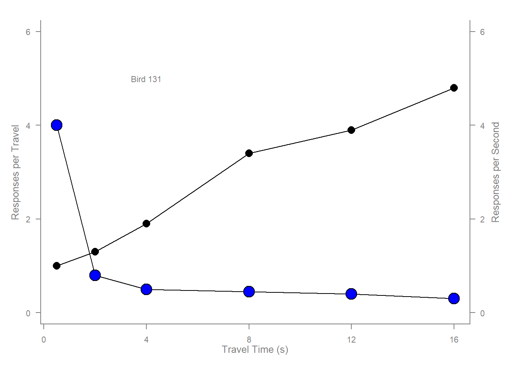
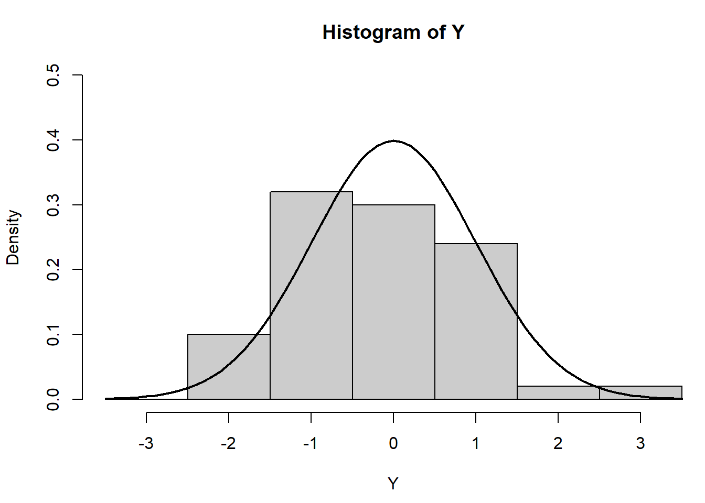
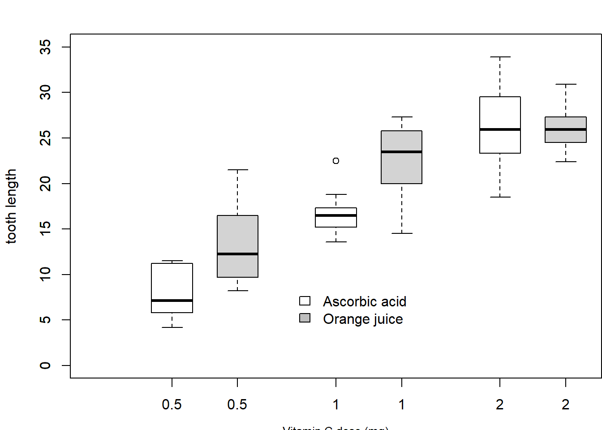
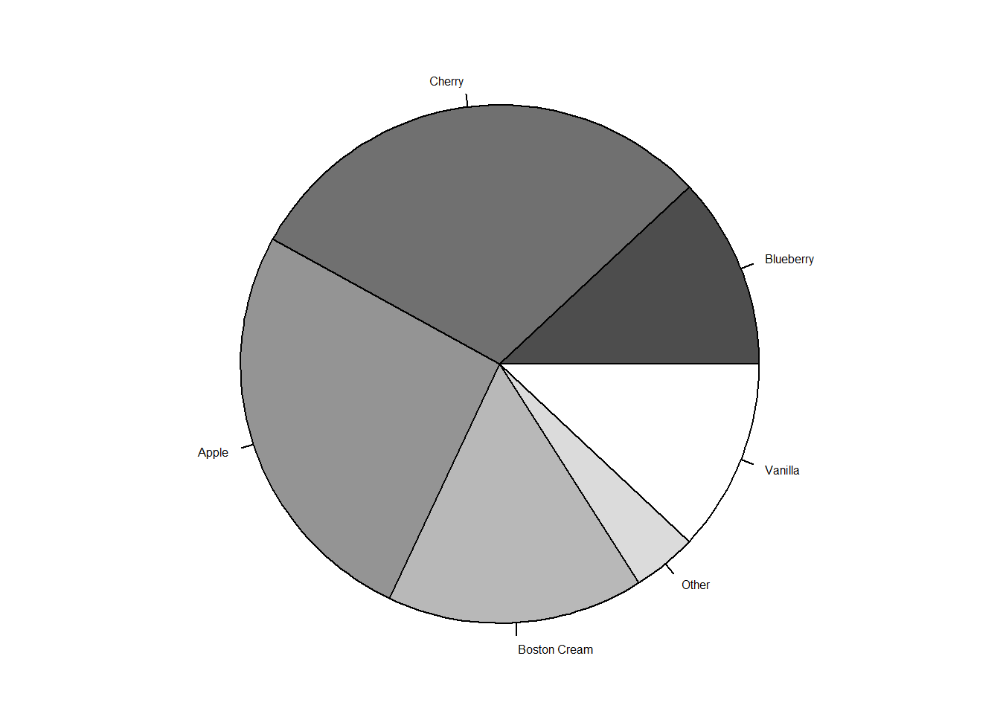

## Start plotting from basics
# Note the order
plot(pressure, pch=16) # Can you change pch?
text(150, 600,
"Pressure (mm Hg)\nversus\nTemperature (Celsius)")
Run Paul Murrell's RGraphics basic R programs line by line and address the questions if there is one in comments.
(i) Can you change pch?
Yes, you can change the pch. In this case, pch=16 specifically represents a solid circle. The pch parameter allows you to customize the appearance of the points in the plot. By changing the value of pch, you can use different symbols or characters to represent the data points.
For example:
pch=1 represents a point.
pch=2 represents an open circle.
pch=3 represents a closed triangle.
pch=4 represents an open triangle.
and so on.
## Start plotting from basics
# Note the order
plot(pressure, pch=16) # Can you change pch?
text(150, 600,
"Pressure (mm Hg)\nversus\nTemperature (Celsius)")
(ii) Scatterplot: Made after changing the cex from 2 to 3, and the background color of points in x, y2 line from white to blue.
axis(1, at=seq(0, 16, 4)) # What is the first number standing for?
In the R code axis(1, at=seq(0, 16, 4)), the first number, which is 1, indicates that the axis being modified is the x-axis. The axis() function in R is used to add axis labels or tick marks to a plot.
The syntax for axis() is axis(side, at, labels, ...) where:
side specifies which axis to draw (1 for x-axis, 2 for y-axis, 3 for top x-axis, and 4 for right y-axis).
at specifies the positions at which tick marks should be drawn.
labels can be used to provide labels for the tick marks.
So, in the context of axis(1, at=seq(0, 16, 4)), it means that tick marks are being added to the x-axis at positions specified by seq(0, 16, 4). The seq(0, 16, 4) generates a sequence of numbers from 0 to 16 with a step size of 4, so the tick marks will be placed at 0, 4, 8, 12, and 16 on the x-axis.
# Scatterplot
# Note the incremental additions
x <- c(0.5, 2, 4, 8, 12, 16)
y1 <- c(1, 1.3, 1.9, 3.4, 3.9, 4.8)
y2 <- c(4, .8, .5, .45, .4, .3)
# Setting label orientation, margins c(bottom, left, top, right) & text size
par(las=1, mar=c(4, 4, 2, 4), cex=.7)
plot.new()
plot.window(range(x), c(0, 6))
lines(x, y1)
lines(x, y2)
points(x, y1, pch=16, cex=2) # Try different cex value? Changed cex from 3 to 2
points(x, y2, pch=21, bg="blue", cex=3) # Different background color: changing it from white to blue
par(col="gray50", fg="gray50", col.axis="gray50")
axis(1, at=seq(0, 16, 4)) # What is the first number standing for?
axis(2, at=seq(0, 6, 2))
axis(4, at=seq(0, 6, 2))
box(bty="u")
mtext("Travel Time (s)", side=1, line=2, cex=0.8)
mtext("Responses per Travel", side=2, line=2, las=0, cex=0.8)
mtext("Responses per Second", side=4, line=2, las=0, cex=0.8)
text(4, 5, "Bird 131")
par(mar=c(5.1, 4.1, 4.1, 2.1), col="black", fg="black", col.axis="black")(iii) Histogram:
# Histogram
# Random data
Y <- rnorm(50)
# Make sure no Y exceed [-3.5, 3.5]
Y[Y < -3.5 | Y > 3.5] <- NA # Selection/set range
x <- seq(-3.5, 3.5, .1)
dn <- dnorm(x)
par(mar=c(4.5, 4.1, 3.1, 0))
hist(Y, breaks=seq(-3.5, 3.5), ylim=c(0, 0.5),
col="gray80", freq=FALSE)
lines(x, dnorm(x), lwd=2)
par(mar=c(5.1, 4.1, 4.1, 2.1))(iv) Barplot:
This R code below from Murrell generates a side-by-side boxplot comparing the tooth length (len) for different doses of either ascorbic acid (“VC”) or orange juice (“OJ”) in the ToothGrowth dataset.
# Boxplot
par(mar=c(3, 4.1, 2, 0))
boxplot(len ~ dose, data = ToothGrowth,
boxwex = 0.25, at = 1:3 - 0.2,
subset= supp == "VC", col="white",
xlab="",
ylab="tooth length", ylim=c(0,35))
mtext("Vitamin C dose (mg)", side=1, line=2.5, cex=0.8)
boxplot(len ~ dose, data = ToothGrowth, add = TRUE,
boxwex = 0.25, at = 1:3 + 0.2,
subset= supp == "OJ")
legend(1.5, 9, c("Ascorbic acid", "Orange juice"),
fill = c("white", "gray"),
bty="n")
par(mar=c(5.1, 4.1, 4.1, 2.1))(v) Perspective plot:
This R code generates a 3D perspective plot of a mathematical function using the persp() function. The function is defined by f(x, y) over a specified range of x and y values. The plot is configured with specific viewing angles and margins.
# Perspective plot
x <- seq(-10, 10, length= 30)
y <- x
f <- function(x,y) { r <- sqrt(x^2+y^2); 10 * sin(r)/r }
z <- outer(x, y, f)
z[is.na(z)] <- 1
# 0.5 to include z axis label
par(mar=c(0, 0.5, 0, 0), lwd=0.5)
persp(x, y, z, theta = 30, phi = 30,
expand = 0.5)
par(mar=c(5.1, 4.1, 4.1, 2.1), lwd=1)(vi) Piechart:
This R code is creating a pie chart using the pie() function to visualize sales distribution for different pie flavors. It sets the margins, character expansion factor. The cex=0.5 parameter reduces the size of the chart elements for better readability. Then it creates a vector specifying the sales distribution for each pie flavor, and then creates a pie chart using pie() fucntion and specifying the color of each pie slice as different shades of gray!
# Piechart
par(mar=c(0, 2, 1, 2), xpd=FALSE, cex=0.5)
pie.sales <- c(0.12, 0.3, 0.26, 0.16, 0.04, 0.12)
names(pie.sales) <- c("Blueberry", "Cherry",
"Apple", "Boston Cream", "Other", "Vanilla")
pie(pie.sales, col = gray(seq(0.3,1.0,length=6))) 
Happy Planet Data:
# Install and load required packages
options(repos = c(CRAN = "https://cloud.r-project.org/"))
install.packages("readxl")Installing package into 'C:/Users/shiva/AppData/Local/R/win-library/4.2'
(as 'lib' is unspecified)package 'readxl' successfully unpacked and MD5 sums checked
The downloaded binary packages are in
C:\Users\shiva\AppData\Local\Temp\Rtmp6n1VpE\downloaded_packageshappy_data <- read_excel(“happy_planet_data.xlsx”, sheet = “Sheet1”)
par(mfrow=c(2, 3))
plot(happy_data\(GDP, happy_data\)Life.Expectancy, main=“Scatterplot”, xlab=“GDP”, ylab=“Life Expectancy”)
hist(happy_data$Life.Expectancy, main=“Histogram”, xlab=“Life Expectancy”, col=“lightblue”)
barplot(happy_data\(Wellbeing, names.arg=happy_data\)Country, main=“Barplot”, xlab=“Country”, ylab=“Wellbeing”, las=2, col=“skyblue”)
persp(happy_data\(GDP, happy_data\)Life.Expectancy, happy_data$Wellbeing, main=“Perspective Plot”, xlab=“GDP”, ylab=“Life Expectancy”, zlab=“Wellbeing”, theta=30, phi=20)
pie(happy_data\(Happy.Planet.Index, labels=happy_data\)Country, main=“Pie Chart”, col=rainbow(length(happy_data$Country))) ``` ::: {.cell}
:::